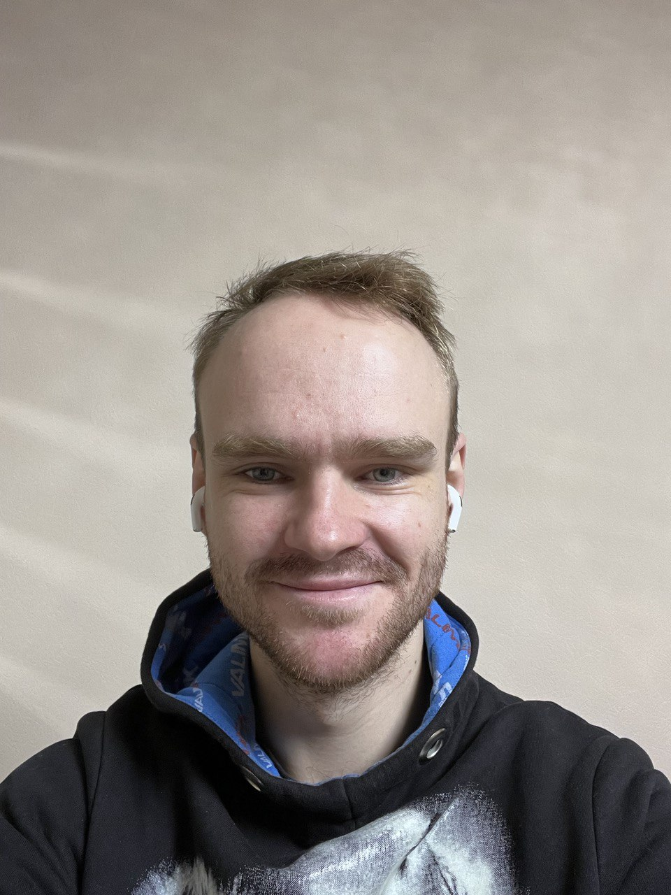

Vladyslav Lapytskyi

Marine Engineer
Work Experience
- 2017 - 2019 Junior Engineer at
Anglo Eastern
- Learning various ship's systems and mechanisms. 3rd Engineer's assistant.
- 2019 - 2022 3rd Engineer at
Anglo Eastern
- Responsible for such mechanisms as diesel generators, compressors, pumps, etc.
Skills:
- English
- Analytical thinking
- Disciplined
Achivements:
- Took part in a major repairs of the engines sized as three-storey house.
- Visited a lot of beautiful places.
- Left my previous job. (yes this is an achivement for me)